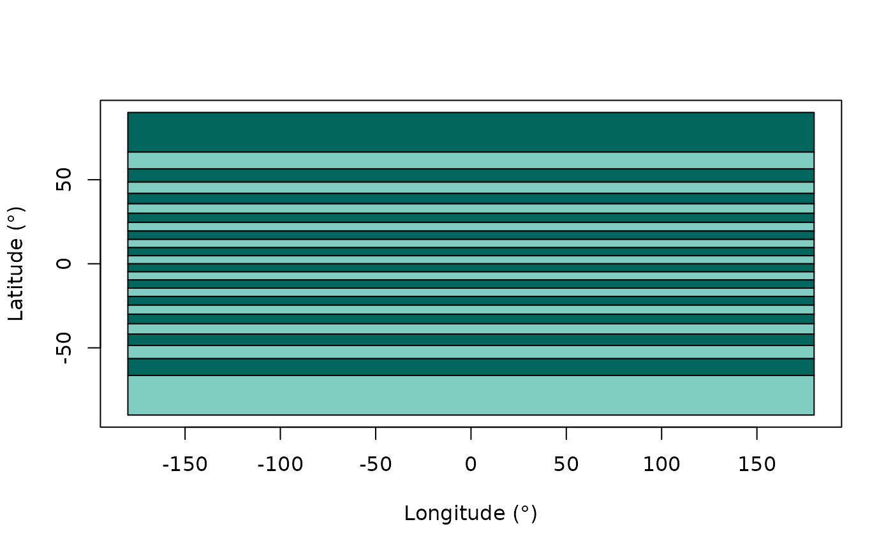

A function to generate approximately equal-area latitudinal bins for a user-specified number of bins and latitudinal range. This approach is based on calculating the curved surface area of spherical segments bounded by two parallel discs.
Arguments
- n_bins
numeric. A single numeric value defining the number of equal-area latitudinal bins to split the latitudinal range into (as defined byminandmax).- min
numeric. A single numeric value defining the lower limit of the latitudinal range (defaults to -90).- max
numeric. A single numeric value defining the upper limit of the latitudinal range (defaults to 90).- r
numeric. The radius of the Earth in kilometres. Defaults to the volumetric mean radius of the Earth (6371 km). Other user-specifiedrvalues are accepted (e.g. equatorial radius 6378 km).- plot
![[Deprecated]](figures/lifecycle-deprecated.svg) Use
Use plot()on the output of this function instead.- n
- Use
n_binsinstead. - x
data.frame. An object of class"palaeoverse_lat_bins_area"created bylat_bins_area().- ...
Extra arguments passed to
plot(). The following arguments are already set internally and must not be specified here:type,xlim,ylim.- col
character. A character vector of length 2 indicating the colours to use for the bins.- xlab
character. The x-axis title.- ylab
character. The y-axis title.
Value
A data.frame of user-defined number of latitudinal bins. The
data.frame contains the following columns: bin (bin number), min
(minimum latitude of the bin), mid (midpoint latitude of the bin),
max (maximum latitude of the bin), area (the area of the bin in
km2), area_prop (the
proportional area of the bin across all bins).
See also
For bins with unequal area, but equal latitudinal range, see lat_bins_degrees.
Examples
# Generate 12 latitudinal bins
lat_bins_area(n_bins = 12)
#> bin min mid max area area_prop
#> 1 1 56.442690 73.221345 90.000000 4.250537e+13 0.08333333
#> 2 2 41.810315 49.126503 56.442690 4.250537e+13 0.08333333
#> 3 3 30.000000 35.905157 41.810315 4.250537e+13 0.08333333
#> 4 4 19.471221 24.735610 30.000000 4.250537e+13 0.08333333
#> 5 5 9.594068 14.532644 19.471221 4.250537e+13 0.08333333
#> 6 6 0.000000 4.797034 9.594068 4.250537e+13 0.08333333
#> 7 7 -9.594068 -4.797034 0.000000 4.250537e+13 0.08333333
#> 8 8 -19.471221 -14.532644 -9.594068 4.250537e+13 0.08333333
#> 9 9 -30.000000 -24.735610 -19.471221 4.250537e+13 0.08333333
#> 10 10 -41.810315 -35.905157 -30.000000 4.250537e+13 0.08333333
#> 11 11 -56.442690 -49.126503 -41.810315 4.250537e+13 0.08333333
#> 12 12 -90.000000 -73.221345 -56.442690 4.250537e+13 0.08333333
# Generate latitudinal bins for just the (sub-)tropics
lat_bins_area(n_bins = 6, min = -30, max = 30)
#> bin min mid max area area_prop
#> 1 1 19.471221 24.735610 30.000000 4.250537e+13 0.1666667
#> 2 2 9.594068 14.532644 19.471221 4.250537e+13 0.1666667
#> 3 3 0.000000 4.797034 9.594068 4.250537e+13 0.1666667
#> 4 4 -9.594068 -4.797034 0.000000 4.250537e+13 0.1666667
#> 5 5 -19.471221 -14.532644 -9.594068 4.250537e+13 0.1666667
#> 6 6 -30.000000 -24.735610 -19.471221 4.250537e+13 0.1666667
# Generate latitudinal bins and a plot
plot(lat_bins_area(n_bins = 24))
